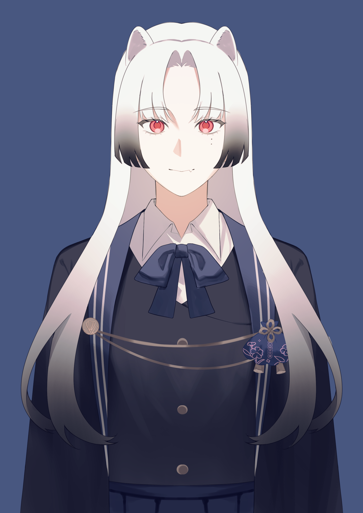
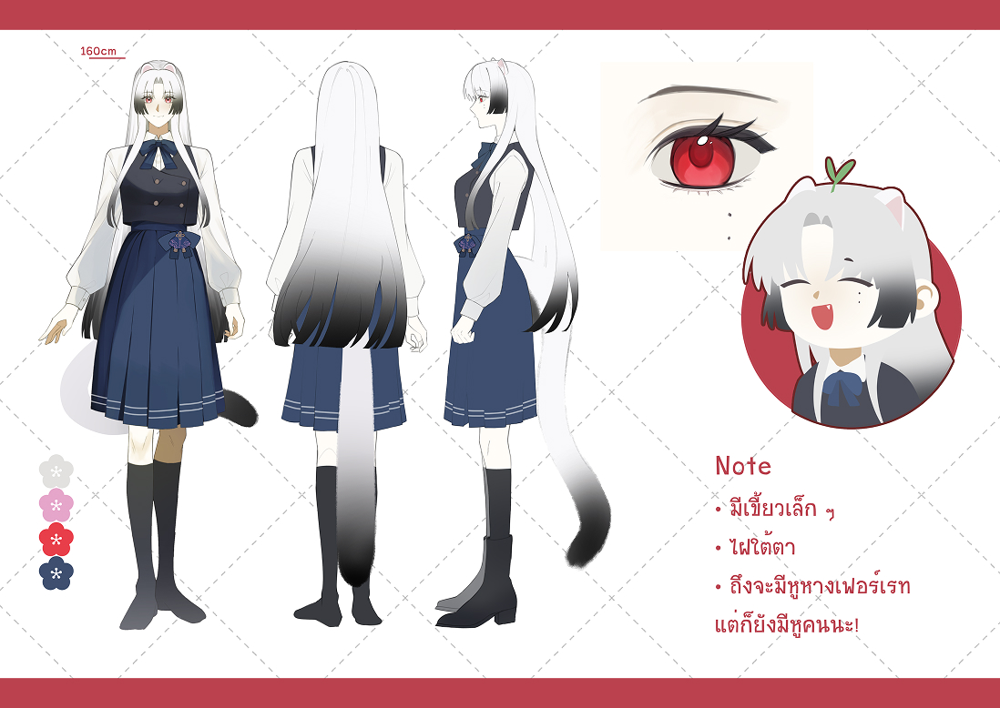
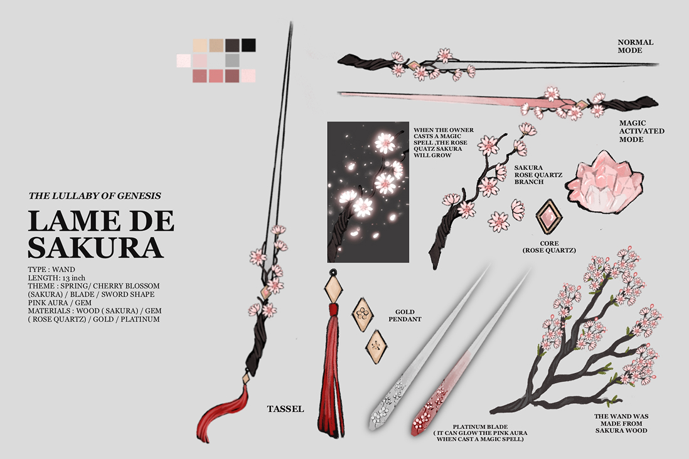

ใบสมัครตัวละครนักเรียน
ชิโนโนเมะ ริน
東雲 凛 · Shinonome Rin
ยัตต้า!

Mahoushiki Gakuen
ใบสมัครตัวละครนักเรียน
東雲 凛 · Shinonome Rin
ยัตต้า!



มีหูหางสัตว์งอกออกมาจากร่างกาย บางครั้งก็มีต้นอ่อนงอกขึ้นบนหัวด้วย?!
ไม่มีค่ะ! แข็งแรงสดใส พร้อมกินหญ้า
ขึ้นชั้นปีที่ 2 แล้วค่ะ! ต่อจากนี้ก็จะพยายามต่อไปนะคะ!!
เกิดในครอบครัวเกษตรกรธรรมดา หมู่บ้านเล็กเชิงเขา จังหวัดโคชิ พ่อแม่ไม่มีความรู้เรื่องเวทมนตร์ และใช้ชีวิตเรียบง่ายจากการปลูกผักขาย เมื่อรินแสดงพลังผิดปกติตั้งแต่เด็ก ความสัมพันธ์ในบ้านจึงห่างเหินมากกว่าความอบอุ่น
รายได้ครอบครัวไม่แน่นอน ถูกเลี้ยงดูแบบจำกัดอิสรภาพ ขาดปัจจัยพื้นฐานหลายด้าน ทั้งอาหาร เสื้อผ้า และโอกาสทางสังคม จนได้รับจดหมายเชิญเข้าเรียนที่โรงเรียนมัธยมปลายมาโฮชิกิ
เริ่มต้นจากศูนย์ อ่านไม่ออก เขียนไม่ได้ และไม่เคยเรียนในระบบ จึงตามเพื่อนไม่ทันและต้องซ้ำชั้นสองปี อีกทั้งไม่มีเงินสนับสนุนจากผู้ปกครอง จึงทำงานพิเศษควบคู่การเรียน ใช้ชีวิตเรียบง่ายและประหยัด แต่ไม่เคยยอมแพ้
กระตุ้นเมล็ดให้แตกหน่อฉับพลันจนดันผ่านดินหรือพื้นผิวไม่แข็งมาก สร้างพุ่มไม้ เถาวัลย์ หรือรากพืชในพื้นที่กำหนด ใช้สร้างสิ่งกีดขวาง ปิดทางเดิน หรือทำกำบังชั่วคราว พืชจากเวทจะคงอยู่ช่วงเวลาหนึ่งก่อนเหี่ยวเฉา
เรียกเถาวัลย์และรากให้เคลื่อนไหวตามเจตนา เพื่อพันธนาการ จับยึด แขวนสิ่งของ หรือช่วยดึงตัวผู้ใช้ เหมาะกับการคุมพื้นที่และจำกัดการเคลื่อนไหวมากกว่าการโจมตีโดยตรง เพราะโครงสร้างยังเปราะบางและขาดได้
ส่งพลังเวทลงสู่พื้นผ่านเมล็ดหรือรากเพื่อรับแรงสั่นสะเทือนและการเคลื่อนไหวใกล้เคียง ใช้ตรวจจับสิ่งที่อยู่นอกสายตา รวมถึงค้นหาแหล่งน้ำหรือพื้นที่เหมาะปลูก ระยะรับรู้ขึ้นอยู่กับความชำนาญและสภาพพื้นดิน
เป็นคนอ๊อง ๆ เล็กน้อย ไม่ได้เข้าใจคำพูดหรือความหมายแฝงของคนอื่นได้ทันที บางครั้งเลยเผลอทำตัวเสียมารยาทไปโดยไม่ตั้งใจ แต่ไม่ใช่เด็กที่พูดแล้วไม่รู้ความอะไร เพียงแค่ต้องใช้เวลาทำความเข้าใจมากกว่าคนอื่นนิดหน่อยเท่านั้น
ขี้เล่นและซุกซน พลังงานเยอะ มีความอยากรู้อยากเห็นไปเสียทุกเรื่อง การได้เรียนรู้สิ่งใหม่ ๆ คือความสนุกอย่างหนึ่งในชีวิต
ค่อนข้างขี้อ้อนกับคนสนิท หากผูกพันแล้วจะชอบตามติดหรือแวะเวียนมาอยู่ใกล้ ๆ เสมอ เพราะในใจมองว่าคนคนนั้นคือพื้นที่ปลอดภัย อยู่ด้วยแล้วสบายใจ
นอนเยอะ หลับทีหลับเป็นตาย ใครปลุกไม่ตื่น ต่อจะให้ไฟไหม้ ฟ้าผ่า ฝนตก น้ำท่วม แต่ก็จะไม่ตื่นจนกว่าจะครบเวลานอน แต่พอตื่นขึ้นมาก็พลังงานล้น ไม่มีงัวเงีย!
จริง ๆ แล้วเป็นคนฉลาดเรียนรู้ได้ไว ชอบวางแผนเล็ก ๆ น้อย ๆ ทำหน้าใส ๆ แต่เบื้องหลังคือคนต้นเรื่อง เวลาทำผิดก็จะทำตาแป๋วใส่ทันที
การเรียนรู้สิ่งใหม่ ๆ, ของชิ้นเล็กน่ารัก, ที่แคบอบอุ่น, เสียงหัวเราะและบรรยากาศสบาย ๆ
การถูกเร่งให้เข้าใจหรือให้ตอบทันที, การถูกเมินเฉยแบบไร้เหตุผล, พื้นที่โล่งกว้างไม่มีที่ให้หลบซ่อน
ความมืด, การทำผิดพลาดจนคนอื่นไม่พอใจ, การถูกทิ้งให้อยู่คนเดียวโดยไม่รู้ตัว
โรล > เวิ่น > วาด
ตอบแชทค่อนข้างช้า แต่จะพยายามตอบตลอดนะคะ
แอคเคาท์ตัวละคร: ใส่หลังผ่าน
ช่องทางติดต่อ: DM ตัวละคร